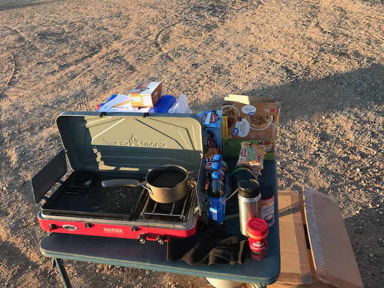

White Mesa Fat Ass 50k 2023
Overview
Sophie Geernaert and I were the only two to do an entire 50k, but there were fifteen signed participants (and another runner who chose to run without signing up).
Not only did I get off course, but I led other people off course, too.
FWIW, I dubbed this a "Leisurely White Mesa Fat Ass 50k", because my average heart rate was only 125. 130 and below is leisurely in my lexicon.
Sadness
WMFA50k was not only on Veteran's Day this year, but it was also the day of Chuck Fuller's Memorial Service. I knew Chuck as Dennis Muirhead's Wednesday running partner. I looked forward to seeing them when our paths intersected. WMFA50k had already been on the calendar for months when his memorial was scheduled, so I had to be there in spirit, which made for a day of mixed emotions.
Weather
The weather was excellent, however, a freak snowstorm had hit Albuquerque the day before and I expected much worse weather for the event. I wound up encouraging people who weren't going to do the full 50k to start late, which made it a tiny bit less social, but seemed like a prudent thing to do at the time.
Aid

Since I was worried about the temperature, I brought a thermos full of very hot water, and some "just add hot water" food and beverages: coffee, hot chocolate and oatmeal. I also made available a few things, like ramen, that need to be heated for a while in hot water, and to heat them, a small propane stove and pan.
I don't think any of the heated stuff got consumed, although I do think a bottle of Pepsi was taken. I can't be sure, because I was on drugs1.